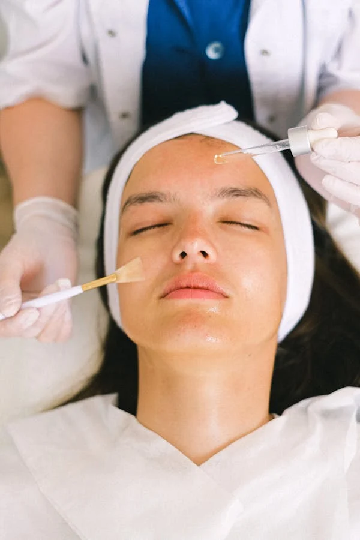

Skinbooster: a Hidratação que Transforma a Qualidade da Pele
O skinbooster é um dos procedimentos que mais surpreende as pacientes pela transformação na qualidade da pele: luminosidade, hidratação e maciez profunda que nenhum creme consegue oferecer — porque age de dentro para fora.

O que é skinbooster?
O skinbooster é um tratamento estético minimamente invasivo que consiste na injeção de ácido hialurônico (AH) de baixa viscosidade diretamente na derme (camada média da pele). Diferente do preenchimento convencional — que usa AH de alta viscosidade para criar volume — o skinbooster não tem função volumétrica: seu objetivo exclusivo é melhorar a qualidade da pele.
O ácido hialurônico utilizado no skinbooster é estabilizado, o que significa que permanece na pele por meses, funcionando como uma "esponja" que atrai e retém moléculas de água no tecido dérmico. O resultado é uma hidratação profunda, de dentro para fora, que se traduz em pele mais macia, luminosa e firme.
Curiosidade: O ácido hialurônico é uma molécula naturalmente presente em nossa pele, mas sua concentração diminui com a idade e a exposição solar. Aos 40 anos, temos menos da metade do ácido hialurônico que tínhamos aos 20.
Benefícios comprovados do skinbooster
Os principais benefícios documentados do skinbooster incluem:
- Hidratação profunda e duradoura: Diferente de cremes que hidratam apenas a superfície, o AH intradérmico retém água na própria estrutura da pele
- Melhora da luminosidade: Pele mais hidratada reflete melhor a luz, resultando em aparência mais saudável e viçosa
- Aumento da elasticidade: O AH estimula os fibroblastos a produzirem colágeno e elastina
- Suavização de linhas finas: Especialmente as linhas causadas por desidratação e perda de espessura da pele
- Uniformização da textura: Reduz poros dilatados e irregularidades superficiais
- Prevenção do envelhecimento: A hidratação profunda e o estímulo de colágeno têm efeito preventivo
Diferença entre skinbooster e preenchimento
Esta é uma das dúvidas mais frequentes — e a confusão é compreensível, pois ambos utilizam ácido hialurônico. A diferença está na formulação e no objetivo:
- Preenchimento: AH de alta viscosidade, injetado em camadas mais profundas. Cria volume, define contornos. Indicado para lábios, sulcos, bochechas.
- Skinbooster: AH de baixa viscosidade, injetado na derme. Não cria volume. Melhora a qualidade da pele de forma global. Indicado para face, pescoço, colo e mãos.
Em resumo: o preenchimento trata estruturas faciais específicas, o skinbooster trata a qualidade da pele como um todo.
Para quem é indicado o skinbooster?
O skinbooster é indicado para adultos que apresentam:
- Pele desidratada, opaca ou sem viço
- Pele fina com perda de elasticidade
- Linhas finas de desidratação (diferentes das rugas de expressão)
- Pele com textura irregular ou poros dilatados
- Dano solar acumulado (manchas, espessamento irregular)
- Desejo de prevenção e manutenção da saúde cutânea
Pode ser realizado nas regiões do rosto, pescoço, colo, mãos e até na área ao redor dos olhos — regiões onde o envelhecimento da pele é mais evidente.
Perfil ideal
O skinbooster beneficia especialmente:
- Pacientes a partir dos 25-30 anos com interesse em prevenção
- Pessoas com pele ressecada por climatização artificial, sol ou envelhecimento
- Quem busca um resultado natural, de "pele descansada"
- Pacientes que já fazem Botox ou preenchimento e querem otimizar a qualidade da pele
Quer pele mais hidratada e luminosa?
A Dra. Lara Cristian realiza skinbooster em Águas Claras, Brasília. Agende uma avaliação e descubra o protocolo ideal para o seu tipo de pele.
Como é o procedimento?
O skinbooster é um procedimento ambulatorial realizado em consultório, sem necessidade de internação:
- Limpeza da pele: A área a ser tratada é higienizada
- Anestesia tópica: Creme anestésico é aplicado por 30 a 45 minutos para maior conforto
- Marcação dos pontos: O profissional planeja os pontos de injeção de acordo com as necessidades da paciente
- Aplicação: Micro-injeções de AH são realizadas com agulha fina em toda a área tratada. O procedimento dura 20 a 40 minutos
- Finalização: Aplicação de creme calmante e protetor solar
Pós-procedimento
Após o skinbooster é comum aparecer pequenos pontos elevados (as "pápulas") na região tratada — isso é absolutamente normal e desaparece em 12 a 24 horas. Pode haver leve vermelhidão e sensibilidade por 1 a 2 dias.
- Evite maquiagem por 24 horas
- Não faça exercícios intensos por 24 horas
- Use protetor solar FPS 50+ a partir do dia seguinte
- Evite sauna e banho muito quente por 48 horas
Protocolo e duração dos resultados
O protocolo padrão do skinbooster consiste em:
- Ciclo inicial: 2 a 3 sessões com intervalo de 3 a 4 semanas entre cada uma
- Manutenção: 1 sessão a cada 6 meses após o ciclo inicial
Os resultados se tornam progressivamente mais evidentes após cada sessão. A hidratação e luminosidade são percebidas rapidamente. A melhora de elasticidade e textura é mais gradual, se intensificando ao longo das semanas.
Com manutenção regular, os resultados podem ser sustentados indefinidamente — muitas pacientes notam que com o tempo a pele fica cada vez mais saudável.
Skinbooster pode ser combinado com outros procedimentos?
Sim, o skinbooster se combina muito bem com outros tratamentos. Combinações frequentes:
- Skinbooster + Botox: O Botox trata rugas de expressão; o skinbooster melhora a qualidade da pele. Juntos, oferecem um rejuvenescimento mais completo.
- Skinbooster + Bioestimulador: O bioestimulador repõe volume e estimula colágeno estrutural; o skinbooster hidrata e refina a textura.
- Skinbooster + Fios de PDO: Os fios criam sustentação e tração; o skinbooster melhora a qualidade da pele sobre eles.
Perguntas Frequentes
Skinbooster é a injeção de ácido hialurônico de baixa viscosidade na camada intradérmica da pele. Não cria volume — seu objetivo é promover hidratação profunda, melhorar elasticidade, luminosidade e qualidade geral da pele.
O desconforto é mínimo. A maioria dos protocolos inclui anestesia tópica prévia. Algumas formulações também contêm lidocaína para maior conforto durante a aplicação.
O protocolo inicial consiste em 2 a 3 sessões com 3 a 4 semanas de intervalo. Após esse ciclo, recomenda-se manutenção semestral para sustentar os resultados.
O preenchimento usa AH de alta viscosidade para criar volume em áreas específicas. O skinbooster usa AH leve para melhorar a qualidade da pele como um todo — sem criar volume. São produtos diferentes com objetivos complementares.
Agende seu skinbooster em Águas Claras
A Dra. Lara Cristian atende em Águas Claras, Brasília DF. Avalie o protocolo mais adequado para o seu tipo de pele.